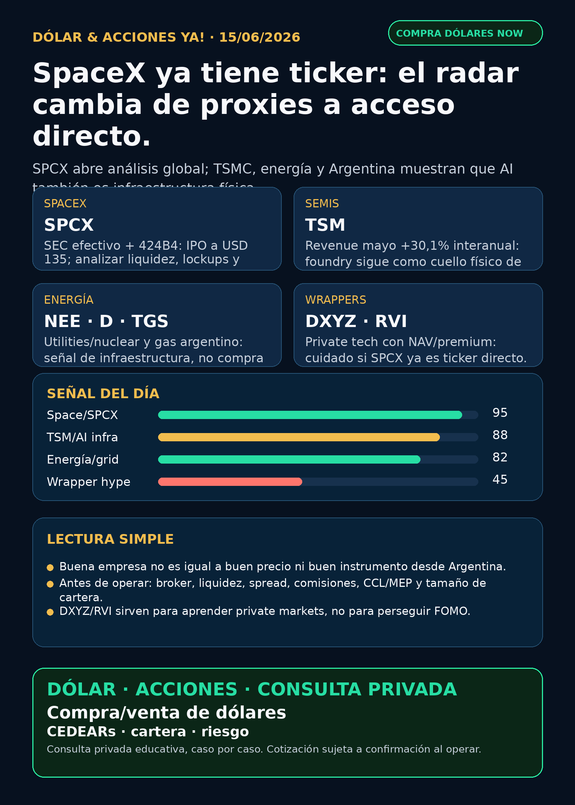

Dólar & Acciones YA!
SpaceX/SPCX pasa a ticker directo global; TSMC confirma demanda AI física; energía nuclear/utility y TGS refuerzan la capa Argentina, con wrappers DXYZ/RVI bajo lupa.
DÓLAR · CEDEARs · ACCIONES · RIESGOServicio privado por mensaje. Cotización de dólar sujeta a confirmación al operar.

Audio suspendido
Por instrucción vigente de Charly, esta edición no genera ni adjunta voz/TTS. El reporte completo queda en texto y pack descargable.
Links útiles
Dólar & Acciones YA! — 15/06/2026
Reporte educativo para entender dólar, acciones, CEDEARs, energía, AI, pharma, defensa, space y riesgo desde Argentina. Ordenado por valor educativo y señal de radar, no por recomendación de compra.
1. Lectura simple del día
La lectura simple: SpaceX/SPCX cambió de categoría. Ya no es sólo una empresa privada que se mira por proxies como DXYZ/RVI: la SEC muestra S-1 efectivo y prospecto final 424B4. Eso abre un ticker directo global/US para análisis humano, pero no convierte automáticamente la historia en “comprar”.
En criollo: una gran empresa puede ser una mala inversión si entrás caro, por un instrumento equivocado, con mal spread o sin entender el riesgo. Para Argentina la pregunta no es sólo “¿me gusta SpaceX?”; también es “¿tengo acceso real, liquidez, precio vivo, comisiones, dólar/CCL y tamaño correcto?”.
2. Tesis central
La tesis de hoy es: AI, space y energía se están juntando en infraestructura física difícil de copiar. El mercado no está mirando solamente modelos de AI; mira foundries, satélites, data centers, energía barata/estable, nuclear, red eléctrica, contratos, regulación y control corporativo.
- SpaceX/SPCX lleva el carril space/orbital AI al mercado público global.
- TSMC confirma que el cuello físico de AI sigue vivo: revenue de mayo +30,1% interanual.
- NextEra/Dominion y TGS muestran que energía y riesgo país también importan.
- DXYZ/RVI sirven para aprender private markets, pero ya no se pueden vender como “acceso limpio” a SpaceX sin mirar NAV/premium.
3. Ranking educativo por calidad de señal — no es orden de compra
1) SpaceX / SPCX — ticker directo global, pero análisis humano obligatorio
Qué pasó: la SEC registró efectividad del S-1 de Space Exploration Technologies Corp el 11/06/2026 a las 10:00 AM. El prospecto final 424B4 del 12/06/2026 muestra una IPO de 555.555.555 acciones Clase A a USD 135, listado aprobado en Nasdaq/Nasdaq Texas bajo SPCX. El cálculo bruto de la oferta ronda USD 75.000 millones. El prospecto también muestra estructura dual-class: Elon Musk mantiene aproximadamente 82,4% del poder de voto post-oferta.
Por qué importa: Stock Radar pasa de “buscar proxies a SpaceX” a separar: ticker directo SPCX, wrappers como DXYZ/RVI, posibles ETFs/fondos, y acceso real desde Argentina/US. La empresa puede ser extraordinaria, pero el precio, el float, la liquidez, lockups y control de voto mandan.
Estado: señal fortalecida / potencial candidato para análisis humano global. No es recomendación de compra.
Riesgo: valuación post-IPO, volatilidad, control concentrado, lockups, liquidez real, dependencia regulatoria/defensa, ejecución Starship/Starlink/orbital compute, y acceso desde broker/Argentina.
Fuentes:
- SEC 424B4 Space Exploration Technologies Corp: https://www.sec.gov/Archives/edgar/data/1181412/000162828026042639/spaceexplorationtechnologi.htm
- SEC EFFECT: https://www.sec.gov/Archives/edgar/data/1181412/999999999526001968/xslEFFECTX01/primary_doc.xml
2) TSMC / TSM — el cuello físico de AI sigue pasando por foundries
Qué pasó: TSMC informó en SEC 6-K revenue consolidado de mayo 2026 de aproximadamente NT$416,98 billones taiwaneses, +1,5% mensual y +30,1% interanual; enero-mayo suma NT$1.961,80 billones taiwaneses, +30,0% interanual.
Por qué importa: refuerza que AI infra no es sólo NVIDIA o software. Si la demanda de compute crece, foundries avanzadas, litografía, packaging, memoria y energía siguen siendo cuellos físicos.
Estado: fortalece tesis. No define precio de entrada.
Riesgo: geopolítica Taiwán/China, valuación, ciclo semis, concentración de clientes, capex y competencia tecnológica.
Fuente primaria: https://www.sec.gov/Archives/edgar/data/1046179/000104617926000367/tsm-revenue20260610.htm
3) Energía AI / utilities — NextEra + Dominion muestran escala regulada
Qué pasó: filings Rule 425 de NextEra/Dominion incluyeron comunicación sobre el deal propuesto cercano a USD 67.000 millones y la combinación de exposición nuclear/utility para demanda eléctrica histórica.
Por qué importa: AI necesita electricidad real. Utilities, nuclear, transmisión, deuda y reguladores se vuelven parte del stack AI. No es “comprar utilities porque AI”; es vigilar dónde hay capacidad, contratos, aprobación regulatoria y balance.
Estado: fortalece tesis sectorial / vigilar.
Riesgo: aprobación regulatoria, deuda, tasas, integración, capex, política energética y valuación.
Fuentes:
- SEC Rule 425 NextEra: https://www.sec.gov/Archives/edgar/data/753308/000110465926071008/tm2614888d14_425.htm
- SEC Rule 425 Dominion: https://www.sec.gov/Archives/edgar/data/715957/000119312526263912/d22592d425.htm
4) TGS / TGSU2 — energía argentina con mejora crediticia
Qué pasó: Transportadora de Gas del Sur informó que S&P subió la calificación de deuda local y extranjera de largo plazo de B- a B, tras revisión del transfer and convertibility risk assessment de Argentina.
Por qué importa: para Argentina, energía no es sólo petróleo/gas: también es financiamiento, riesgo país, acceso al mercado y capacidad de sostener proyectos. Una mejora de rating no garantiza suba de la acción, pero reduce parte del ruido crediticio.
Estado: fortalece tesis Argentina / vigilar. No es orden de compra.
Riesgo: regulación local, tarifas, tipo de cambio, deuda, liquidez, spread, CCL y ciclo político.
Fuente primaria: https://www.sec.gov/Archives/edgar/data/931427/000093142726000008/tgs.htm
5) DXYZ / RVI — wrappers privados con más riesgo después de SPCX
Qué pasó: DXYZ informó ATM de hasta USD 1.000 millones; al 21/05/2026 el filing mostraba precio USD 61,66 vs NAV/share USD 24,56 al 31/03/2026, con premium aproximado de 151,1%. RVI está verificado como fondo cerrado NYSE con cartera pre-IPO — Databricks, Revolut, Mercor, Airwallex, Boom Supersonic, Oura, Via, Wonder — pero no es una operating company.
Por qué importa: si SPCX ya existe como ticker directo global/US, pagar premium extremo en wrappers para exposición indirecta a SpaceX se vuelve menos limpio. Sirven para educación/private markets, no para perseguir FOMO.
Estado: vigilar / riesgo elevado / educación. Acceso Argentina no confirmado.
Fuentes:
- SEC 424B5 DXYZ: https://www.sec.gov/Archives/edgar/data/1843974/000157587226000359/dxyz102_424b5.htm
- SEC N-CSR RVI: https://www.sec.gov/Archives/edgar/data/2085091/000208509126000012/ck0002085091-20260331.htm
4. Capa Argentina — dólar, MEP, CCL y CEDEARs
Referencias públicas consultadas el 15/06/2026 a la mañana AR:
- BlueLytics oficial venta: $1453,00. Última actualización: 2026-06-15T08:45:51-03:00.
- BlueLytics blue venta: $1460,00. Última actualización: 2026-06-15T08:45:51-03:00.
- CriptoYa MEP AL30 24hs: $1448,20. Timestamp de mercado: 12/06 16:56 AR; puede ser cierre previo.
- CriptoYa CCL AL30 24hs: $1495,28. Timestamp de mercado: 12/06 16:56 AR; puede ser cierre previo.
- CriptoYa USDT venta: $1509,39. Timestamp API: 15/06 08:46 AR.
Traducción en criollo:
- MEP: forma de dolarizar vía bonos. Puede tener parking, spread, comisión y diferencia compra/venta.
- CCL: dólar implícito que pega en CEDEARs y acciones extranjeras vistas desde Argentina.
- CEDEAR: no es la acción directa de Estados Unidos; tiene ratio, liquidez local, spread, horario y CCL implícito.
- Spread: diferencia entre precio comprador y vendedor. Si es ancho, entrás perdiendo.
- Instrumento importa: tener razón sobre SpaceX/TSMC/energía y equivocarse en liquidez, tamaño o dólar puede arruinar una buena tesis.
5. Precios de referencia — contexto, no fundamento
No uso precios públicos aproximados como base de decisión. Yahoo Chart devolvió cierres plausibles para algunos tickers — por ejemplo SPCX mostró cierre 12/06 cerca de USD 160,95 — pero para precio de entrada, P&L o ejecución real hay que usar broker/mercado vivo y separar acción US, CEDEAR si existiera, CCL/MEP, spread y comisiones.
6. Watchlist base — seguimiento rápido
- SPCX / SpaceX: señal central nueva. Ticker directo global/US; Argentina/acceso/precio vivo pendientes.
- RKLB: sigue en radar space/defensa por Nasdaq-100 y PTS-G verificados días previos; hoy no hay señal primaria nueva más fuerte.
- NVDA: sin señal primaria corporativa nueva superior en esta corrida; tesis estructural sostenida por TSMC y AI infra física.
- PLTR: revisado; annual meeting/votaciones no cambian tesis comercial.
- TSM: señal fortalecida por revenue mayo +30,1% interanual.
- MU: earnings del 24/06 siguen como catalizador; sin claim HBM nuevo primario hoy.
- GOOGL/GOOG: cloud/TPU/Waymo siguen estructurales; 8-K de stock plan no es moat AI.
- AAPL: revisado; sin señal nueva fuerte posterior al carril Siri/WWDC ya tratado.
- HOOD: agentic trading/MCP sigue como radar educativo, no promesa de rentabilidad; sin novedad nueva.
- TSLA: autonomy/robotaxi apareció como chatter, sin fuente primaria suficiente para elevar.
- ASML: sin claim propio nuevo; TSMC +30% sostiene semicap estructural. ASML sí / all-in no.
- Gold / GLD / GOLD / B: desambiguar siempre: commodity oro, ETF GLD, Barrick
GOLD; Broadcom esAVGO, noB. - RVI: fondo cerrado/wrapper privado, no operating company; requiere NAV/premium actualizado antes de cualquier decisión.
- SNDK: storage/NAND/SSD para data centers; revisado sin señal nueva central.
- CBRS: radar alto AI chips; sin nuevo filing/IPO actualizado para elevar hoy.
- AVGO: custom silicon/networking AI sigue central; sin señal primaria nueva superior hoy.
7. Energía y farmacéuticas/salud
Energía: NextEra/Dominion fortalece utilities/nuclear para demanda AI. En Argentina, TGS mejora rating; VIST fijó resultados 2Q26 para 16/07 y webcast 17/07; Pampa/PAM tuvo 6-K de credit rating pero el detalle no quedó extraído completo, queda para auditoría antes de publicarlo como señal. YPF, VIST, Pampa Energía, TGS y Central Puerto quedan revisadas; antes de ejecución local: precio, CCL/MEP, liquidez, spread, balance y horizonte.
Pharma/salud: revisado. No apareció nueva primaria FDA/EMA más fuerte que la señal ya indexada de Wegovy/semaglutide oral UK y el incidente IT de Novo. LLY/NVO siguen estructurales en GLP-1, pero no hay titular fresco para forzar.
8. Defensa, aerospace, space y physical AI
- Defensa/guerra física: revisado explícitamente. AVAV, RTX, LMT, NOC, GD, KTOS, BA, HWM, ITA/XAR no dieron nuevo contrato primario fuerte esta noche. Estado: revisado sin señal fuerte nueva.
- GE / GE Aerospace: revisado; hubo 8-K de board appointment, no señal nueva de backlog/defensa.
- Space/orbital AI:
SPCXes titular; RKLB sigue como carril space systems/defensa. - Autonomous mobility / physical AI: Tesla, Waymo/Alphabet, Uber, Zoox/Amazon y Joby revisados; hubo chatter, pero sin fuente primaria suficiente. No elevar.
9. Radar amplio fuera de watchlist
- Private markets: DXYZ/RVI son educación de wrappers privados: NAV, premium/descuento, liquidez, fees, ATM/dilución y acceso importan más que el nombre de moda.
- AI trading agents: sin señal nueva; sigue la regla de seguridad: datos correctos, reliability, ledger, paper/read-only, aprobación humana y límites de riesgo.
- Crypto gobernado: sin input nuevo y sin auditoría on-chain. No mezclar tokens virales con acciones/PPI.
- VCX/ARKVX/AGIX/XOVR/Forge: aparecieron como hype/proxies de private tech en discovery, pero sin fact sheet/SEC/fuente primaria validada. No elevar.
10. Red flags / hype para ignorar
- “SpaceX salió a bolsa, entonces hay que comprar ya”: falso. Falta precio vivo, liquidez, spread, valuación, float, lockups, acceso y tamaño de cartera.
- “DXYZ/RVI son lo mismo que comprar SpaceX/OpenAI”: falso. Son wrappers con NAV, premium, liquidez, fees y activos privados restringidos.
- “TSMC +30% significa comprar cualquier semi”: falso. La tesis mejora, pero cada ticker tiene valuación, riesgo y ciclo propio.
- “Utility/nuclear = AI trade automático”: incompleto. Hay reguladores, deuda, tasas, capex y riesgo político.
- “Una mejora de rating en TGS garantiza suba”: falso. Es señal crediticia, no promesa de precio.
11. Recibo visible de cobertura
Revisado hoy: watchlist base completa, posiciones/tickers habituales de Mi Simulación, energéticas argentinas, pharma/GLP-1, defensa/aeroespacial, space/private wrappers, AI infra/semis, fintech/AI agents, autonomía/physical AI y crypto gobernado. Donde no hubo señal fuerte, queda marcado como revisado sin señal nueva fuerte.
12. Qué mirar después
1. SPCX: cotización viva, volumen, spread, market cap, float, lockups, acceso broker US y eventual CEDEAR/instrumento local.
2. TSM/semis: si el crecimiento de revenue sostiene márgenes, capex y lectura de demanda AI.
3. NEE/D y energía: aprobación regulatoria, deuda, nuclear/base-load, grid y contratos de data centers.
4. TGS/energía Argentina: reacción a rating, liquidez local/ADR, CCL, spread y próximos balances.
5. DXYZ/RVI: recalcular NAV/premium y dejar de tratarlos como acceso limpio a SpaceX si SPCX ya es directo.
13. Servicio privado
Dólar · CEDEARs · Acciones · Riesgo. Si querés comprar o vender dólares, invertir en acciones o pensar una estrategia financiera más personalizada, escribime por privado y lo vemos caso por caso. Cotización sujeta a confirmación al momento de operar.
14. Disclaimer
Esto no es asesoramiento financiero personalizado ni orden de compra/venta. Es research educativo para decisión humana: cada caso depende de objetivo, monto, plazo, liquidez, cartera, impuestos, broker y tolerancia al riesgo.
Dólar · Acciones · Consulta privada
Compra/venta de dólares, CEDEARs, acciones, cartera y riesgo caso por caso. Cotización sujeta a confirmación al momento de operar.